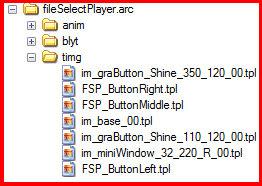

NOTE: The tutorial was not written by me, and was written by John Telstra (on RVLution). So credit goes to him for the tutorial (and me for adding extra info, improving some grammatical errors, and publishing it here).
Posted by John Telstra
this is for changing the “Hold The WiiMote sideways” screen in Newer. Which is this:
I’ve heard someone named, "somerandomdude312" created a thread that he needed help to change the “Hold the WiiMote sideways” screen in NewerSMBW/etc., If you wanted to change some parts like that in NewerSMBW, you bumped into the right tutorial.
Psst. Click One of the Spoiler tags for any of the methods in the tutorial.
Requirements
-NewerSMBW
-A Windows PC.
-CTools
-U8 Archive Opener
-A hex editor
-The file, controllerInformation.arc file in the /Others folder in Newer.
-A USB or SD Device to launch Newer
-Riivolution and Wii or Wii U
Tutorial
NOTE: This method is for changing the bottom MSG,
To change the upper MSG, look at the spoiler tag that tells you how to change the Upper MSG.
Step 1: Download NewerSMBW at the Newer Team’s Website and wait for it to download and extract it into one folder.
Step 2: Open the file /NewerSMBW/Others/controllerinformation.arc. Extract the file controllerInformation_07.brlyt in the ARC File w/ any U8 Archive opener (e.g. BrawlBox, SZS Modifier, SZSTool from the CTools, etc.). I recommend UltimateU8 from the Wii.cs tools, since it’s pretty much easy to use. The download link for it is here: http://code.google.com/p/showmiiwads/downloads/detail?name=Wii.cs%20Tools%200.3.rar
Step 3: Right-click on the controllerInformation_07.brlyt file in UltimateU8 and click “Extract File” and extract it where ever you want.
Step 4: Get a Hex Editor, I recommend PSPad. Download PSPad here. And extract it into one folder.
Step 5: Open the file, controllerInformation_07.brlyt with the hex editor. Search for these lines:
Make sure to edit the text that are highlighted in the picture!
And The
.1...1.0.
text of the message may be
.1...2.0.
instead when you look into the RLYT (since Newer Has been updated to v1.2.0).
But if it has v1.2.0 instead, your in the right spot.
And edit them with some word that you can think of.
NOTE: I haven’t known if you can put longer text in the Message. Normally it may crash the game if you put longer text.
For an example for this tutorial, we’ll change the message into “NEWER Message Edit Demo.” Then Once you’ve edited the words, it should look like this:
Step 6: Save the BRLYT file once done editing. And Open UltimateU8 and open the controllerInformation.arc file in the Others folder in Newer.
And Right click on the file, controllerInformation_07.brlyt and click “Delete”.
Then right-click on the blyt folder in the ARC File and click “Add file”, add the newly-modified controllerInformation_07.brlyt file in it. And click “Save”. Then Exit UltimateU8.
Step 7: Then test it to see if it works. Now it should show something like this (this is the example message we’ve used in Step 4):
NOTE: There may be a bit of an parsing issue w/ The Message Shadow/etc., depending on the message.
Requirements
-NewerSMBW
-A Windows PC
-CTools
-The file, Message.arc file in the /Message folder in the NewerSMBW Folder
-A USB or SD Device to launch Newer
-Riivolution and Wii or Wii U
Tutorial
NOTE: This method is for changing the Upper MSG,
Not the Bottom MSG.
To change the upper text in the “Hold the wiimote sideways” screen in Newer, Download the CTools from The Chadsoft website. And follow the install instructions.
Open /NewerSMBW/Message/Message.arc File with the SZSTool from the CTools. Open the BMG File in it.
Find this in the BMG:
And Edit the Message to something.
For an example, we’ll edit it w/ This statement here:
Once you’ve edited the Message in whatever statement you wanna edit, click the Update button in the BMG Editor. Then hit Ctrl-S on your Keyboard in the BMG Editor to save the BMG File then exit the BMG Editor. Then in the SZSTool Window, hit Ctrl-S on the keyboard to save the ARC File then exit the SZSTool. Then it should change to something like this when you launch it in Newer (this is the example we’ve used):
Requirements
-NewerSMBW
-A Windows PC.
-Benzin
-XML Editor
-U8 Archive Opener
-A hex editor
-The file, controllerInformation.arc file in the /Others folder in the NewerSMBW.
-A USB or SD Device to launch Newer
-Riivolution and Wii or Wii U
Tutorial
This is for changing the Stripey part of the Background of the Screen (under the bottom/upper message),
Step 1: Get a U8 Archive opener, I recommend UltimateU8 from the Wii.cs tools. The download link for it is here: http://code.google.com/p/showmiiwads/downloads/detail?name=Wii.cs%20Tools%200.3.rar. And extract the RAR Archive into one folder. After that Open UltimateU8. Open the controllerInformation.arc file in NewerSMBW/Others. Then extract the file controllerInformation_07.brlyt in the ARC File wherever you want.
Step 2: Download the XMLYT Converter (which is Benzin), (the download for it is at the bottom of the thread) and extract it into one folder. Drag the controllerInformation_07.brlyt file in the Benzin folder. Now you’ll have to convert it into XMLYT format. Run the CMD script named, CONTROLLERINFORMATION_XMLYT_CONVERT.CMD.
Step 3: Get a XML Editor, I recommend PSPad. Download PSPad here and extract it into one folder. Open the XMLYT file with PSPad. Find these lines in the XMLYT:
Step 4: Mess around w/ the RGBA Values/etc. (the numbers next to the r=" , g=" , b=" , a=" text in the XMLYT are the RGBA Color Values) to get the color that you want. For an example we’ll put RGBA Values to Zero to remove the stripes. After modifiying the file it should
look something like this:
Step 5: When done modifying the XMLYT file, hit Ctrl-S on the keyboard to save the file. Go to the folder that contains Benzin, and run the CMD Script, CONTROLLERINFORMATION_BRLYT_CONVERT.CMD. Then open UltimateU8.
Step 6: Click Open in UltimateU8. Locate the controllerInformation.arc file in NewerSMBW/Others and open it. Delete the file controllerInformation_07.brlyt by Right-Clicking and click “Delete” in UltimateU8. Then Right-Click on the blyt folder in the ARC File, click Add File. Locate and choose the Newly-Modified controllerInformation_07.brlyt file.
Step 7: Click Save in UltimateU8 and then exit. Then Test and Improve! Then it should show something like this (This is the Example we used in Step 4):
Requirements
-NewerSMBW
-A Windows PC.
-U8 Archive Opener
-An XML editor
-The file, controllerInformation.arc file in the /Others folder in Newer.
-A USB or SD Device to launch Newer
-Riivolution and Wii or Wii U
Tutorial
NOTE: This is for changing the Blue-ish part of the “Hold the WiiMote sideways” screen in newer,
For the tutorial on how to do the stripey part of the BG, look at the spoiler tag that tells you how to change the stripey part of the BG.
Step 1: Get a U8 Archive opener, I recommend UltimateU8 from the Wii.cs tools. The download link for it is here: http://code.google.com/p/showmiiwads/downloads/detail?name=Wii.cs%20Tools%200.3.rar. And extract the RAR Archive into one folder. After that Open UltimateU8. Open the controllerInformation.arc file in NewerSMBW/Others. Then extract the file controllerInformation_07.brlyt in the ARC File wherever you want.
Step 2: Download the XMLYT Converter (which is Benzin), (the download for it is at the bottom of the thread) and extract it into one folder. Drag the controllerInformation_07.brlyt file in the Benzin folder. Now you’ll have to convert it into XMLYT format. Run the CMD script named, CONTROLLERINFORMATION_XMLYT_CONVERT.CMD.
Step 3: Get a XML Editor, I recommend PSPad. Download PSPad here and extract it into one folder. Open the XMLYT file with PSPad. Find these lines in the XMLYT:
Step 4: Mess around w/ the RGBA Values/etc. (the numbers next to the r=" ,g=" , b=" , a=" text in the XMLYT are the RGBA Color Values) to get the color that you want. For an example we’ll put RGBA Values to Zero to have a black background. After modifiying the file, it should look something like this:
Step 5: When done modifying the file, hit Ctrl-S on the keyboard to save the file. Go to the folder that contains Benzin, and run the CMD Script, CONTROLLERINFORMATION_BRLYT_CONVERT.CMD. Then open UltimateU8.
Step 6: Click Open in UltimateU8. Locate the controllerInformation.arc file in NewerSMBW/Others and open it. Delete the file controllerInformation_07.brlyt by Right-Clicking and click “Delete” in UltimateU8. Then Right-Click on the blyt folder in the ARC File, click Add File. Locate and choose the Newly-Modified controllerInformation_07.brlyt file.
Step 7: Click Save in UltimateU8 and then exit. Then Test and Improve! Then it should show something like this (This is the Example we used in Step 4):
Unfortunately, I don’t know how to insert a custom picture and replace the blue-ish part of the BG.
Probably you’ll need to do some BRLYT editing/etc. to do that. Which could be VERY hard to do.
Requirements
-NewerSMBW
-A Windows PC.
-U8 Archive Opener that can replace texture images in a U8 Archive (e.g. BrawlBox, SZS Modifier, CTools, etc.)
-An Image editor that can edit PNG Image files (e.g. Photoshop, RealWorld Paint, etc.)
-The file, controllerInformation.arc file in the /Others folder in Newer.
-A USB or SD Device to launch Newer
-Riivolution and Wii or Wii U
Tutorial
Step 1: Download a U8 Archive Opener that can replace texture images in a U8 Archive, I’d recommend SZS Modifier, since it can replace textures instantly. Download it here.
Step 2: Open NewerSMBW/Others/controllerInformation.arc w/ SZS Modifier. Open the timg folder in the ARC File. Then you should see these TPL texture images:
The TPLs in the picture above Refers to different images.
Step 3: Choose a TPL texture image file, for an example we’ll do the light blue BG (which is CIT_Left.tpl, CIT_Right.tpl, CIT_Middle.tpl).
These pictures here shows which TPL Images refer to which image of the “Hold the WiiMote Sideways” screen:
Step 4: Double-Click on the image preview box. Then it’ll give you the Texture Edit Window:
Step 5: Click, File --> Export in the texture edit window.
Give the exported image a name. Then save it somewhere in your computer. Now Edit them with a paint editor. I recommend RealWorld Paint from the RealWorld Graphics Website. Download RWPaint here. And follow the install instructions.
Step 6: Run RealWorld Paint, and open the texture file you exported using SZS Modifier using RealWorld Paint. Modify them using RWPaint, for an example we’ll do a colorize on the texture.
Step 7: Once done modifying the texture image, hit Ctrl-S on the keyboard to save the texture image.
Step 8: Click, File --> Import. Locate the texture you modified and click on it. After clicking File --> Import in the Texture edit window/etc., it should look like something like this:
Then click Save in the Texture Edit Window.
Step 9: Hit Ctrl-S on your Keyboard in SZS Modifier and wait for it to save the file.
Step 10: Once your done, test and improve! Now it should look like something like this (this is the example we used in Step 4 when editing the texture image):
Requirements
-NewerSMBW
-A Windows PC.
-A USB or SD Device to launch Newer.
-The file sequenceBG.arc in the /Others folder in the NewerSMBW.
-An XML Editor (such as PSPad).
-A BRLYT to XMLYT converter (such as Benzin).
-Riivolution and Wii or Wii U
-U8 Archive Opener that can extract files from an U8 archive (such as the Wii.cs Tools, BrawlBox, etc).
Tutorial
This step is for changing the Blue File Select Screen BG (the BG at the back of the buttons/etc on the file select screen):
Step 1: Get the NewerSMBW Package at Newer Team’s Website. And follow the instructions on installing it.
Step 2: Download a U8 Archive Opener that can extract files from an U8 Archive I’d suggest getting UltimateU8 from the Wii.cs Tools as it’s free and simple, download it here.
Step 3: Download the XMLYT Converter (which is Benzin), (the download for it is at the bottom of the thread) and extract it into one folder.
Step 3b: Open the sequenceBG.arc file in UltimateU8 (by clicking Open and locating the file). Right-click on file sequenceBG_00.brlyt and click Extract File then put it in the folder where you put the benzin package there. (also ignore the CONTROLLERINFORMATION_XMLYT_CONVERT.CMD and the CONTROLLERINFORMATION_BRLYT_CONVERT.CMD files as they are not needed in this tutorial in this spoiler tag).
Step 4: Open up the Windows Command prompt (by going to C:\WINDOWS\SYSTEM32\ in the Windows File Explorer and clicking on the cmd.exe file). After you double-clicked on the cmd.exe file, Switch to the directory where you extracted benzin. By doing this:
cd <DIRECTORYNAME>
Replace the <DIRECTORYNAME> stuff w/ the folder path where you put the benzin in. For example if you put the folder in your desktop, you may do something like this:
cd C:\Users\%USERNAME%\Desktop\Benzin\
Then type the command to convert the BRLYT to XMLYT:
benzin r sequenceBG_00.brlyt sequenceBG_00.xmlyt
Step 5: Get an XML editor, I’d suggest using PSPad, as it’s free and simple, get it here. However if you have an XML editor already on your computer, you may use that one on your computer instead of getting this one.
Step 6: Open the XMLYT in PSPad, search for these lines:
Step 7: Mess around w/ the RGBA Values/etc. (the numbers next to the r=" ,g=" , b=" , a=" text in the XMLYT are the RGBA Color Values) to get the color that you want. For an example we’ll put RGBA Values to Zero to have a clear-colored background. After modifiying the file, it should look something like this:
Step 8: As Said from Step 4: Open up the Windows Command prompt (by going to C:\WINDOWS\SYSTEM32\ in the Windows File Explorer and clicking on the cmd.exe file). After you double-clicked on the cmd.exe file, Switch to the directory where you extracted benzin. By doing this:
cd <DIRECTORYNAME>
Replace the <DIRECTORYNAME> stuff w/ the folder path where you put the benzin in. For example if you put the folder in your desktop, you may do something like this:
cd C:\Users\%USERNAME%\Desktop\Benzin\
Step 8b: Type the command to convert the XMLYT to BRLYT:
benzin m sequenceBG_00.xmlyt sequenceBG_00.brlyt
Step 9: Go to the Open the file sequenceBG.arc w/ UltimateU8 and right-click on the sequenceBG_00.brlyt file and click Delete then right-click on the blyt folder and click Add File and choose the newly-modified BRLYT file (which is in the folder where Benzin is) and hit Save then exit out of UltimateU8. Then test and improve! Here’s the example of changing the file select screen Blue BG to a black BG (as we did in Step 7):
For altering the stripes BG/etc. (that’s in the background of the NSMBWii Original File Select Screen BG), look at the tutorial on altering the stripes part of the BG. Which is next after this tutorial.
Step 9b: (THIS IS OPTIONAL) However, you might now replace the original NSMBWii BG Textures shown in the picture above this text (the BG textures are located in the sequenceBGTexture.arc file). To modify the textures of the sequenceBGTexture.arc file, get the sequenceBGTexture.arc file from your NSMBWii Game and get a U8 Archive editor that can edit TPL images (such as SZS Modifier, BrawlBox, CTools, etc) and extract the TPLs and convert them to PNG and edit them in RealWorld Paint, Adobe Photoshop, or any paint editor you’d like. Then convert those PNG images you edited and convert them to TPL, and replace the TPL Images of the sequenceBGTexture.arc file w/ the TPL images you created and Save the file and put the “newly-modified” sequenceBGTexture.arc file in the /Others/ folder of the NewerSMBW folder on your SD or USB Device and test them and improve.
This is for Changing the Stripes Part of the Blue BG of the file Select Screen.
Requirements
-NewerSMBW
-A Windows PC.
-A USB or SD Device to launch Newer.
-A BRLYT to XMLYT converter (such as Benzin).
-The file sequenceBG.arc in the /Others folder in the NewerSMBW.
-An XML Editor (such as PSPad).
-Riivolution and Wii or Wii U
-U8 Archive Opener that can extract files from an U8 archive (such as the Wii.cs Tools, BrawlBox, etc).
Tutorial
Step 1: Get the Newer SMBW Package at Newer Team’s Website. And follow the instructions on installing it.
Step 2: Download a U8 Archive Opener that can extract files from an U8 Archive I’d suggest getting UltimateU8 from the Wii.cs Tools as it’s free and simple, download it here.
Step 3: Download the XMLYT Converter (which is Benzin), (the download for it is at the bottom of the thread) and extract it into one folder.
Step 3b: Open the sequenceBG.arc file in UltimateU8 (by clicking Open and locating the file). Right-click on file sequenceBG_00.brlyt and click Extract File then put it in the folder where you put the benzin package there. (also ignore the CONTROLLERINFORMATION_XMLYT_CONVERT.CMD and the CONTROLLERINFORMATION_BRLYT_CONVERT.CMD files as they are not needed in this tutorial in this spoiler tag).
Step 4: Open up the Windows Command prompt (by going to C:\WINDOWS\SYSTEM32\ in the Windows File Explorer and clicking on the cmd.exe file). After you double-clicked on the cmd.exe file, Switch to the directory where you extracted benzin. By doing this:
cd <DIRECTORYNAME>
Replace the <DIRECTORYNAME> stuff w/ the folder path where you put the benzin in. For example if you put the folder in your desktop, you may do something like this:
cd C:\Users\%USERNAME%\Desktop\Benzin\
Then type the command to convert the BRLYT to XMLYT:
benzin r sequenceBG_00.brlyt sequenceBG_00.xmlyt
Step 5: Get an XML editor, I’d suggest using PSPad, as it’s free and simple, get it here. However if you have an XML editor already on your computer, you may use that one on your computer instead of getting this one.
Step 6: Open the XMLYT in PSPad, search for this line:
Step 7: Mess around w/ the RGBA Values/etc. (the numbers next to the r=" ,g=" , b=" , a=" text in the XMLYT are the RGBA Color Values) to get the color that you want. For an example we’ll put RGBA Values to Zero to have no stripes in the background. After modifiying the file, it should look something like this:
Step 8: As Said from Step 4: Open up the Windows Command prompt (by going to C:\WINDOWS\SYSTEM32\ in the Windows File Explorer and clicking on the cmd.exe file). After you double-clicked on the cmd.exe file, Switch to the directory where you extracted benzin. By doing this:
cd <DIRECTORYNAME>
Replace the <DIRECTORYNAME> stuff w/ the folder path where you put the benzin in. For example if you put the folder in your desktop, you may do something like this:
cd C:\Users\%USERNAME%\Desktop\Benzin\
Step 8b: Type the command to convert the XMLYT to BRLYT:
benzin m sequenceBG_00.xmlyt sequenceBG_00.brlyt
Step 9: Go to the Open the file sequenceBG.arc w/ UltimateU8 and right-click on the sequenceBG_00.brlyt file and click Delete then right-click on the blyt folder and click Add File and choose the newly-modified BRLYT file (which is in the folder where Benzin is) and hit Save then exit out of UltimateU8. Then test and improve! Here’s the example of removing the file select screen Stripes Part of the BG (as we did in Step 7):
Notice that in the Blue BG at the back of the buttons, etc. does not have any stripes in it.
So far I’ve accomplished to edit the texture images of the red buttons on the file select screen shown below:
Requirements
-NewerSMBW
-A Windows PC.
-U8 Archive Opener that can replace texture images in a U8 Archive (e.g. BrawlBox, SZS Modifier, CTools, etc.)
-An Image editor that can edit PNG Image files (e.g. Photoshop, RealWorld Paint, etc.)
-The file, fileSelectPlayer.arc file in the /Others folder in Newer.
-A USB or SD Device to launch Newer
-Riivolution and Wii or Wii U
Tutorial
Step 1: Download a U8 Archive Opener that can replace texture images in a U8 Archive, I’d recommend SZS Modifier, since it can replace textures instantly. Download it here. And follow the instructions of installing it.
Step 2: Open NewerSMBW/Others/fileSelectPlayer.arc w/ SZS Modifier. Open the timg folder in the ARC File. Then you should see these TPL texture images:

The TPLs in the picture above Refers to different images.
Step 3: Choose a TPL texture image file, for an example we’ll do the red Button Textures (which is TPL images: FSP_ButtonRight.tpl, FSP_ButtonLeft.tpl, FSP_ButtonMiddle.tpl). The Table shown below contains the information of which TPL contains which part of the file select screen:
TPL Texture image in fileSelectPlayer.arc
Where the TPL Image refers to on the File Select Screen
FSP_ButtonLeft.tpl
The leftmost part of the red player scene buttons of file select screen.
FSP_ButtonRight.tpl
The rightmost part of the red player scene buttons of file select screen.
FSP_ButtonMiddle.tpl
The middlemost part of the red player scene buttons of file select screen.
im_base_00.tpl
The backdrop texture of the red buttons on the file select screen (or maybe something else or not only that?).
im_graButton_Shine_350_120_00.tpl
UNKNOWN
im_graButton_Shine_110_120_00.tpl
UNKNOWN
im_miniWindow_32_120_R_00.tpl
UNKNOWN
Step 4: Double-Click on the image preview box. Then it’ll give you the Texture Edit Window:
Step 5: Click, File --> Export in the texture edit window.
Give the exported PNG image a name. Then save it somewhere in your computer. Now Edit them with a paint editor. I recommend RealWorld Paint from the RealWorld Graphics Website as it is free and simple. Download RWPaint here. And follow the install instructions.
Step 6: Run RealWorld Paint, and open the PNG texture file you exported using SZS Modifier using RealWorld Paint. Modify them using RWPaint, for an example we’ll do a colorize in yellow on the texture.
Step 7: Once done modifying the PNG texture image in the paint editor, hit Ctrl-S on the keyboard to save the texture image.
Step 8: On the SZS Modifier texture edit window, Click, File --> Import. Locate the texture you modified and click on it. After clicking File --> Import in the Texture edit window/etc., it should look like something like this:
Step 9: Hit Ctrl-S on your Keyboard in SZS Modifier and wait for it to save the file.
Step 10: Once your done, test and improve! Now it should look like something like this (this is the example we used in Step 6 when editing the texture image):
Notice that the buttons there are yellow now.
This is for editing the level screenshots photo as shown in the Pre Game of any level selected on any world map:
Step 1: Download an editor that can convert Image files to TPL. I’d suggest using TPLMii from the Wii.cs Tools, as it is fast and simple. Download it here And follow the install instructions.
Step 1b: Have your PNG Image that you wish to use ready for this tutorial (you can also use a JPG, GIF, BMP image if you like, but a PNG image is recommended for usage w/ TPLMii) The PNG Image MUST be 398x242 pixels, otherwise the game may crash or errors can occur—You can Shrink your image to 398x242 pixels if your Image is Big or too Small w/ your Image editor you use.
If the Image you’re using is in a different format such as TIFF, TGA, etc. and is not in JPG, GIF, BMP or PNG, you’ll need to go and export your image as PNG (or JPG, GIF, BMP) w/ your Paint Editor. NOTE: For some paint editors, when you Export your Image to the JPG format, the program might use a .jpeg extension instead of .jpg. If that happens when exporting your image, change the file extension, .jpeg to .jpg.
Step 2: Open the TPLMii.exe file. And you should get the window. And next to the “Image” Box of the Program, click the “..” (ellipsis) button. Choose your JPG or GIF or BMP or PNG image. Switch the TPL Image format to RGB5A3 (Low Quality) as all of the Newer Level Screenshot TPL images are all encoded in RGB5A3. DO NOT CHOOSE OTHER ENCODINGS THAN THAT, OTHERWISE THE GAME MAY CRASH OR OTHER ERRORS MAY OCCUR!
Step 3: Click the Convert button on the Program. And it should say, “Successfully converted to Tpl.” Once you click it. Then Locate the TPL Image (TPLMii would usually put it into the location where the “selected” TPL for conversion is).
Step 4: Rename the TPL Image to the ID for the specific Level (for example, if you wish to have your TPL be the Pre Game screenshot of W1-01, you’d rename it to 01-01.tpl). And put it into the LevelSamples Folder of the NewerSMBW folder.
Step 5: Test it to see if it works. Here’s my modification of the level 01-01 pre game screenshot:
This is for changing the pause menu here:
Step 1: If you don’t have the NewerSMBW package already, Get the NewerSMBW Package here at The Newer Team’s Website. And Follow the instructions on the site on installing Newer.
Step 2: Download a U8 Archive Opener that can replace texture images in a U8 Archive, I’d recommend SZS Modifier, since it can replace textures instantly. Download it here. And follow the instructions of installing it.
Step 3: Open NewerSMBW/Others/pauseMenu.arc w/ SZS Modifier. Open the timg folder in the ARC File. Then you should see these TPL texture images:
The TPLs in the picture above Refers to different images.
Step 4: Choose a TPL texture image file, for an example we’ll do the red/blue Button Textures and the (that is the TPL images: CSM_BlueRight.tpl, CSM_BlueLeft.tpl, CSM_BlueMiddle.tpl), CSM_RedRight.tpl, CSM_RedLeft.tpl, CSM_RedMiddle.tpl). The Table shown below contains the information of which TPL contains which part of the file select screen:
TPL Texture image in pauseMenu.arc
Where the TPL Image refers to on the Pause Screen
im_kadomaruFlame_00.tpl
UNKNOWN
CSM_BlueLeft.tpl
The leftmost part of the Continue button.
CSM_Base.tpl
The background texture of the window. However all colors of the custom textures I did for modification of that image all appears as gray when I use the image for the TPL as the TPL Image is encoded in the IA8 format. The IA8 format only accepts a gray color and no other colors as known.
im_coin_00.tpl
The coin that appears when you pause the game in a Coin Battle Stage, Unused in Newer as the Coin Battle Scene isn't in Newer.
CSM_BlueRight.tpl
The rightmost part of the Continue button.
im_graButton_under_24_00.tpl
UNKNOWN
im_base_00.tpl
The base of the Pause Menu Screen.
im_graButton_up_24_00.tpl
UNKNOWN
CSM_RedLeft.tpl
The leftmost part of the Exit Button.
im_graButton_upRight_24_00.tpl
UNKNOWN
CSM_RedMiddle.tpl
The middlemost part of the Exit Button.
CSM_BlueMiddle.tpl
The middlemost part of the Continue button.
CSM_RedRight.tpl
The rightmost part of the Exit Button.
Step 5: Double-Click on the image preview box. Then it’ll give you the Texture Edit Window:
Step 6: Click, File --> Export in the texture edit window.
Give the exported image a name. Then save it somewhere in your computer. Now Edit them with a paint editor. I recommend RealWorld Paint from the RealWorld Graphics Website. Download RWPaint here. And follow the install instructions.
Step 6b: Run RealWorld Paint, and open the texture file you exported using SZS Modifier using RealWorld Paint. Modify them using RWPaint, for an example we’ll do a colorize in orange on the texture.
Step 7: In the paint editor, Once done modifying the texture image in the paint editor, hit Ctrl-S on the keyboard to save the texture image.
Step 7b: Click, File --> Import. Locate the texture you modified and click on it. After clicking File --> Import in the Texture edit window/etc., it should look like something like this:
Then click Save in the Texture Edit Window.
Step 8: Hit Ctrl-S on your Keyboard in SZS Modifier and wait for it to save the file.
Step 9: Once your done, test and improve! Now it should look like something like this (this is the example we used in Step 6 when editing the texture image):
Tutorial on changing the CANCEL and OK! Buttons of the Pause menu (the buttons that appear when you click the EXIT Button on the Pause Menu).
NOTE: This also edits the Yes and No Buttons, when clicking Save or Title Screen buttons on the menu (when hit the + button on the wii remote in Newer while you’re in a world) and possibly other Yes and No messages.
Step 1: If you don’t have the NewerSMBW package already, Get the NewerSMBW Package here at The Newer Team’s Website. And Follow the instructions on the site on installing Newer.
Step 2: Download a U8 Archive Opener that can replace texture images in a U8 Archive, I’d recommend SZS Modifier, since it can replace textures instantly. Download it here. And follow the instructions of installing it.
Step 3: Open NewerSMBW/Others/yesnoWindow.arc w/ SZS Modifier. Open the timg folder in the ARC File. Then you should see these TPL texture images:
The TPLs in the picture above Refers to different images.
Step 4: Choose a TPL texture image file, for an example we’ll do the Button Textures and the Window Textures (Window Textures: YN_WindowXXX [where XXX is Middle, Left, or Right], Button Textures: YN_ButtonXXX [where XXX is Middle, Left, or Right]). The Table shown below contains the information of which TPL contains which part of the window:
TPL Texture image in yesNoWindow.arc
Where the TPL Image refers to on the CANCEL and OK! buttons dialog
YN_WindowMiddle.tpl
The Middlemost of the Window.
YN_WindowLeft.tpl
The Leftmost of the Window.
YN_ButtonMiddle.tpl
The Middlemost of the Buttons on the Window.
YN_ButtonLeft.tpl
The Leftmost of the Buttons on the Window.
YN_ButtonRight.tpl
The Rightmost of the Buttons on the Window.
YN_WindowRight.tpl
The Rightmost of the Window.
im_base_00.tpl
The Base Image of the Window.
os_baloon_00.tpl
The Mario-style Balloon that appears on a file. It always appears on every File Saved w/ Quick Save.
Unused in Newer as Newer Doesn't use Quick Save to Save Game Files.
Step 5: Double-Click on the image preview box. Then it’ll give you the Texture Edit Window:
Step 6: Click, File --> Export in the texture edit window.
Give the exported image a name. Then save it somewhere in your computer. Now Edit them with a paint editor. I recommend RealWorld Paint from the RealWorld Graphics Website. Download RWPaint here. And follow the install instructions.
Step 6b: Run RealWorld Paint, and open the texture file you exported using SZS Modifier using RealWorld Paint. Modify them using RWPaint, for an example we’ll do a colorize in “gold” on the texture (of the window textures of course!). For the buttons, we’ll do a colorize in orange for the example.
Step 7: In the paint editor, Once done modifying the texture image in the paint editor, hit Ctrl-S on the keyboard to save the texture image.
Step 7b: Click, File --> Import. Locate the texture you modified and click on it. After clicking File --> Import in the Texture edit window/etc., it should look like something like this:
Step 8: Hit Ctrl-S on your Keyboard in SZS Modifier and wait for it to save the file.
Step 9: Once you’re done, test and improve! Now it should look like something like this (this is the example we used in Step 6 when editing the texture image): NOTE: The Buttons may look SLIGHTLY different when you did the tutorial. Since I wanted to resize the textures for the buttons for a weird-looking buttons It appears different (as SZS modifier shrinks the image to the specified Dimensions of the TPL image.
Step 1: Decompress the .LH file /NewerSMBW/Layouts/msgbox.arc.LH. You can do it with NTCompress from the RVL SDK, note that it is illegal to do, So if you are worried/etc., a legal way to do it is to choose ZementBlocks’s NewerDecompressed Package on his Google Drive..
Step 2: Open the decompressed msgbox.arc file with SZS Modifier open up the timg folder and edit the box.tpl and button.tpl textures, I will not put up a table documentation of the textures, as they’re simple (as the names of the TPLs correspond to the object name in the message box).
Step 3: Click on the Image Preview box and click File --> Export. Export the Texture. Give the exported image a name. Then save it somewhere in your computer. Now Edit them with a paint editor. I recommend RealWorld Paint from the RealWorld Graphics Website. Download RWPaint here. And follow the install instructions.
Step 4: Run RealWorld Paint, and open the texture files you exported using SZS Modifier using RealWorld Paint. Modify them using RWPaint, for an example we’ll do a colorize in gold on the message box texture (for the ② button texture we’ll do a colorize in green).
Step 5: Once done modifying the PNG texture image in the paint editor, hit Ctrl-S on the keyboard to save the texture image.
Step 6: On the SZS Modifier texture edit window, Click, File --> Import. Locate the texture you modified and click on it.
Step 7: Hit Ctrl-S on your Keyboard in SZS Modifier and wait for it to save the file.
Step 8: Once your done, go to any level that has a speaker box block, hit it and you should see the message box and your modifications should be there! Then test and improve! The Example you did in the tutorial should make the message box look like this:
Step 1: For editing the course names, Get RoadrunnerWMC’s Level Info Editor. And Follow the install instructions.
Step 2: Open the LevelInfo.bin file in the NewerSMBW/NewerRes folder, w/ RoadrunnerWMC’s level info tool, and edit the course names or world ID numbers as you wish.
Step 3: Save the LevelInfo.bin file w/ the tool, and test the stuff in NewerSMBW and it should work if not good/etc., then improve.
Requirements
-NewerSMBW
-A Windows PC.
-A USB or SD Device to launch Newer
-Riivolution and Wii or Wii U
Tutorial This is for changing the ‘world’ text as shown in the pictures here:
This does not require any BRLYT editing AFAIK.
Step 1: If you don’t have the NewerSMBW package already, Get the NewerSMBW Package here at The Newer Team’s Website. And Follow the instructions on the site on installing Newer.
Step 2: Get a Hex Editor. I would recommend PSPad, since it is 100% free and simple. Download it here. And extract the ZIP archive into one folder.
Step 3: Look into the folder, /NewerSMBW/NewerRes/ in your SD or USB Device. And Open all the DLCode files w/ PSPad.
Step 4: Hit Ctrl-F on your keyboard in PSPad. A window should appear. Check the As Text box in the window. Search for the text “TF_IA8” (without quotes). And some bytes after that text you should see this (focus on the text that are highlighted):
Step 5: And edit those text w/ A text w/ as least 5 characters or less (e.g. “Land”).
Also, BTW, You should replace the characters that are not needed in the message w/ Space(s).
And as I’m saying right now, this must be done IN ALL of the DLCode files including, US_1, US_2, JP_1, JP_2, EU_1, EU_2). For an example, we’ll use the text “Land” (without quotes). Once you’re done w/ the modifications, it should look like this:
Step 6: Save all of the DLCode files and Eject your USB or SD Device and go and insert it into your Wii Now Go Select a Course in any world of the Newer Game. And test your modifications on your Wii, it should look like something like this in the Pause Menu and the Pre Game Screen shown below:
For Putting Longer text in the “World” message, you can download the newer sources and find the source file that contains the “World” message and put your longer text into it and compile the newer sources. But the reason why I didn’t post a tutorial of changing it via the Newer Sources/etc., because It somehow doesn’t work on a real wii/wii u console [as for most people] (it has crashed on a real wii/wii u for Treeki’s and megazig’s Release of the newer sources, as I tested them on my wii and wii u).
Step 2: Open the Messages.bin file in the NewerSMBW/NewerRes folder, w/ RoadrunnerWMC’s messages editor tool, and edit the ID with message box titles/text contents/etc. For example I’m gonna edit the message box where it says something about the raccoon leaf (or the tanooki leaf) which is message ID 30 which is in the Yoshi House level [when you enter the blue pipe in the level] in World 1
Original:
My Message Edits:
Step 3: Save the Messages.bin file. Go to the level that has the speaker box sprite (that is for the message box you edited). Hit it by jumping under it and you should see your message edit. Here is the test of my Message edit:
NOTE: When using the Custom Message Box sprite in a custom level in NewerSMBW in Reggie!, if you wish to use a message box ID, you must add a value of 256 to the ID retrieved from the Newer Messages Editor (e.g. if you wish to use an ID of 30, the value must be 286 {which is 30+256}).
Now, most of you guys who played NewerSMBW did see NewerSMBW's Course Clear Message Hack (when you touch the flagpole in a level). Now I’m gonna Show you how to change it.
Step 1. You need to have a U8 Archive modifier. I would Recommend The Wii.cs Tools, since it is free and simple. Download the Wii.cs tools here: http://code.google.com/p/showmiiwads/downloads/detail?name=Wii.cs%20Tools%200.3.rar&. And extract the zip file it into one folder. Now you’ll need the corseClear.arc file from NSMBWii, which is located at /US/EngUS/Layout/corseClear/ or /EU/EngEU/Layout/corseClear/ . The File may be at a different location, depending on your NSMBWii Disc Region (or language?).
-For NewerSMBW, it is located at /NewerSMBW/Layouts/corseClear.arc (notice that it is in .LH compression, so you’ll need to decompress it with NTCompress from the Nintendo RVL SDK, but it is illegal to do. So for a legal way to do it, you should choose ZementBlock’s NewerDecompressed Package on his Google Drive.).
Step 2: Open UltimateU8 and locate and Open your corseClear.arc. After that, extract the Course Clear BRLYT File from corseClear.arc:
NOTE: For NewerSMBW, the file to extract in the corseClear.arc file is corseClear_EngEU_00.brlyt.
Step 3: You’ll need a hex editor to edit the file. I would recommend PSPad Hex editor to edit the BRLYT file, since it’s free and simple. Download PSPad here. And extract it into one folder.
Step 4: (BACKUP YOUR CORSECLEAR BRLYT FIRST BEFORE EDITING!) Open PSPad and in PSPad, click ‘File’ then ‘Open’. Then choose your Course Clear BRLYT. Now find these lines in the BRLYT:
After the
E..pae1
Line in the BRLYT, these lines should appear next: NOTE: EDIT THE HIGHLIGHTED TEXT IN THE BRLYT, DO NOT EDIT THE ONE THAT ARE NOT HIGHLIGHTED! AND YOU MAY ONLY PUT ONE CHARACTER WHEN EDITING THE HIGHLIGHTED TEXT IN THE PICTURES ABOVE.
NOTE: A C . . pae1 is found first in the Newer Course Clear BRLYT, but it is not mentioned here, as it is unused in NewerSMBW, probably the Newer Team commented out the lines in the BRLANs (which are in the /anim folder) in corseClear.arc which represent the C . . pae1. But I’m not exactly sure if they did that.
After the
L..pae1
Line in the BRLYT, these lines should appear next: NOTE: EDIT THE HIGHLIGHTED TEXT IN THE BRLYT, DO NOT EDIT THE ONE THAT ARE NOT HIGHLIGHTED! AND YOU MAY ONLY PUT ONE CHARACTER WHEN EDITING THE HIGHLIGHTED TEXT IN THE PICTURES ABOVE.
- (This “saying” doesn’t apply to Newer’s Course Clear Message) Now, the text shown in the Pictures may be different when you look into your Course Clear BRLYT, but It all depends on what Game Language is in the Course Clear BRLYT (or Region?). So for the French Language Version of the Course Clear BRLYT may have French language. And for the English Language Version of the Course Clear BRLYT may have English language. And for the Spanish Language Version of the BRLYT may have Spanish language, etc. Also, the length (or the number of characters) of the text may be longer than the ones shown in the picture depending on the Language of the Course Clear BRLYT. For the English version: there is only 12, for the Spanish: probably (but not sure) it is 15.
Obviously for Newer, it is 11 (if you exclude the unused C . . pae1 line). NOTE: Shorter messages (than the original ones of course) is possible, simply replace the strings that are isn’t needed with space(s).
Now edit the letters of the course clear message with your own Lines like, Well Done! or Great Job! or Something. For an example of the tutorial, we’ll change the Message to
TEST01 TEST02
For Newer’s Course Clear—the suggested message to change to:
EDIT1 EDIT2
Step 5: Once you’re done with editing the BRLYT, hit Ctrl-S on the keyboard to save it. The Open UltimateU8, then locate and open the corseClear.arc file. Once you’re done, Right-click on the existing BRLYT File and click “Delete”, then after that, right click on the blyt folder in the ARC File, and click “Add File” then locate and choose the Newly-Modified Course Clear BRLYT file (that you modified with the hex editor). Then Save the ARC File. NOTE: For NewerSMBW, the file to delete/add in the corseClear.arc file is corseClear_EngEU_00.brlyt.
Then drag the corseClear.arc file into the Layout folder in your NSMBWii Patch folder. For NewerSMBW only, put it in the /Layout folder of the NewerSMBW folder. You can also recompress the Newer corseClear.arc to LH format with NTCompress (which is illegal to do), but it isn’t needed, you can use the original uncompressed corseClear.arc.
Step 7: Now test it, And it should look like this once you’ve edited it (This is the Example used in Step 4):
Custom Message for NSMBWii Original:
Custom Message for NewerSMBW:
This is usually the stuff that contains almost all of the Text/Pictures/etc. almost anywhere in the game. Whether it's the world maps, file select screen, etc.
NOTE: I've only tested this tutorial on the BRFNT fonts on the NTSC-U/PAL/NTSC-J NSMBWii discs. I haven't tested this on the NTSC-K/CHT NSMBWii discs.
If you need help w/ any of the changing some parts of the Newer interface or have any questions about this tutorial, feel free to send me a PM or post whatever about it here. Happy Hacking.
NOTE: In case if anyone gets an FAST_CWD pointer computing error with Benzin (http://horizonwii.net/?page=post&id=3001), try downloading the cygwin1.dll file here (don't get the 64-bit version, since Benzin is a 32-bit application): http://www.dlldownloader.com/cygwin1-dll/ (it's a reliable source and not malicious) and replace the existing cygwin1.dll file in the Benzin download, with the download from that site (DLLdownloader) to fix the issue.
If you've tried that out, first, and it doesn't work, try what customlevelfan78 said here: http://horizonwii.net/?page=post&id=3011 _________________________ Don't expect me to be very active here, since I have plans, and many other things in my life.
Yes, but as long as it's necessary for the post and that whatever information (tutorial/etc.) works for me as well, first. _________________________ Don't expect me to be very active here, since I have plans, and many other things in my life.
1) Links to the programs needed
2) Less spaces in the requirement lists
3) Downloading NewerSMBW or NewerSMBW Decompressed should be a step outside the spoilers because its required by every guide
4) Listing SD/USB and Riivolution as requirements (not really needed for the editing, plus i have already posted a tutorial for Riivolution).
5) Random image in Message Editing/Course Clear
6) The font is not explained at all (you could have copypasted it from the manual inside the download). _________________________
Sorry for the prolong bump, but BENZIN doesn't appea to work with any of the brlyt files I've been extracting from my conrtollerinformation.arc file. I've tried numerous programs (and I've even tried them on different OS's), but I keep getting the same error along the lines of the brlyt not being compatible. Any help would be much appreciated.
C:\Users\tmolt\Desktop\BENZIN>benzin r controllerinformation.brlyt controllerinformation.xmlyt
0 [main] BENZIN 11784 find_fast_cwd: WARNING: Couldn't compute FAST_CWD pointer. Please report this problem to
the public mailing list cygwin@cygwin.com
Benzin 2.1.12BETA.
Written by SquidMan (Alex Marshall), comex, and megazig.
(c) 2009 HACKERCHANNEL
Error! Couldn't open controllerinformation.brlyt!
What version of benzin are you using? The one in the download (in the tutorial)? _________________________ Don't expect me to be very active here, since I have plans, and many other things in my life.
It's the latest W10 update that causes this. It's a problem with cygwin, and an update for it is available, tho you'd need to recompile the Benzin source with the latest cygwin.
I've tried this on win7 and have gotten the same result. I did try extracting the brlyt with Brawlbox, for the sake of trying something new. Oh, and yes 9211tr, i am using the one in the description
It doesn't matter, which Windows OS you're compiling Benzin on.
Also, you can simply replace the cygwin1.dll file in the Benzin download with this one: http://www.dlldownloader.com/cygwin1-dll/ (it's a reliable source and not malicious). There's no need to recompile Benzin or anything, also don't get the 64-bit version of the cygwin1.dll, since Benzin is a 32-bit application.
And replace the existing cygwin1.dll file in the Benzin download, with the download from that site (DLLdownloader) to fix the issue.
If you've tried that out, first, and it doesn't work, you can try what customlevelfan78 just said above (recompiling it, or getting his version of Benzin).
(I've also updated the thread to mention this issue, and the solution for it, and such, as well). _________________________ Don't expect me to be very active here, since I have plans, and many other things in my life.
Well, that issue is weird, because replacing the cygwin1.dll file worked for me, and I never got any errors like that, with Benzin.
But since I don't know the answer to your problem, I guess your only option is to follow what customlevelfan78 said (about recompiling it, or downloading his version). _________________________ Don't expect me to be very active here, since I have plans, and many other things in my life.
Tegotae! Master of Events Wayoshi Nintendo ♥ Kondo / Miyamoto ♥
Posts: 11/72
Since: 09-11-17
Last post: 128 days
Last view: 3 days
Great tutorial, I've always wanted to modify those parts of the game but never really did it.
I'll have to go through it step by step and apply every possible modification to my hack hehe.
Btw, I couldn't find something about HUD modding, maybe it's there and I haven't opened the right spoiler.
There is one essential bit of information missing regarding the message boxes. A value of 256 needs to be added to the value retrieved from Newer Messages Editor.
From updated spritedata:
Posted by spritedata.xml
sprite id="152" name="Message Box" notes="Requires Message Box Manager (107) to function. Messages defined in Message.py. This Sprite shows a Message Box when touched. Add a value of 256 to the value retrieved from 'Newer Messages Editor'. The message box appears half a block to the right from the sprite's placement.
Note: For use with Newer Hacks.
Btw, I couldn't find something about HUD modding, maybe it's there and I haven't opened the right spoiler.
There is one essential bit of information missing regarding the message boxes. A value of 256 needs to be added to the value retrieved from Newer Messages Editor.
From updated spritedata:
Posted by spritedata.xml
sprite id="152" name="Message Box" notes="Requires Message Box Manager (107) to function. Messages defined in Message.py. This Sprite shows a Message Box when touched. Add a value of 256 to the value retrieved from 'Newer Messages Editor'. The message box appears half a block to the right from the sprite's placement.
Note: For use with Newer Hacks.
There is nothing regarding HUD modding in this tutorial, actually. You didn't misread anything or such.
Also I added your tip about adding 256 to the Message Box ID. _________________________ Don't expect me to be very active here, since I have plans, and many other things in my life.